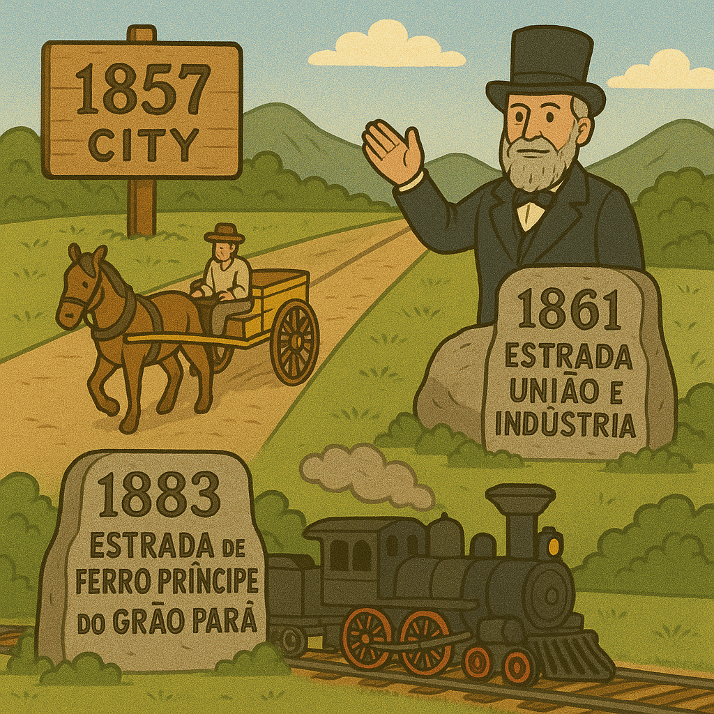

Eisbein is a pork knee. Bratwurst and Weisswurst that are German sausages. fondue and trout
Sweets and Desserts
Apfelstrudel, Black forest, Custard, Handmade Chocolates
Common drinks
Imperial afternoon tea, craft beers, hot chocolate on cold days
HISTORY
Indigenous Origins
Indigenous Origins
In the beginning, the region was inhabited by the Índios coroados, which gave the region the name given by the portugueses: "Sertão dos Índios Coroados". Only after the 18th century did the region start to be occupied by non-natives. The indigenous people lived in harmony with the lush valleys and mountains that provided natural protection and abundant resources.
Sertão dos Índios Coroados
Pre-1800s
Imperial Discovery
Imperial Discovery
In 1833, Dom Pedro I, in his way to Minas Gerais, stayed in Padre Correia's farm and got captivated by the region. He acquired a farm next door, the Córrego Seco Farm, which started to be called Imperial Córrego Seco Farm, where he planned to build a palace. The Emperor was enchanted by the pleasant climate and picturesque landscape.
Dom Pedro I
1833
Imperial City Birth
Imperial City Birth
On March 16th, 1843, Dom Pedro II (Dom Pedro I's son), signed an imperial decree that determined the settlement of a township and the building of the so-dreamed summer palace, in which the fundamental rock was settled by the Emperor in May, 1845, and that was finished in 1847. For then on, the town had turned into the capital of the Brazilian empire during the summer.
Dom Pedro II
1843-1847
Progress & Development
Progress & Development

On September 29th, 1857, the place was elevated to the status of a city, and in 1861, the first macadamized highway in Brazil was opened, the Estrada União e Indústria. In 1883, the Estrada de Ferro Príncipe do Grão Pará arrived at the city. Between 1894 and 1902, Petrópolis was the capital of Rio de Janeiro. In 1903, it was signed the Treaty of Petrópolis, which incorporated Acre to Brazil.